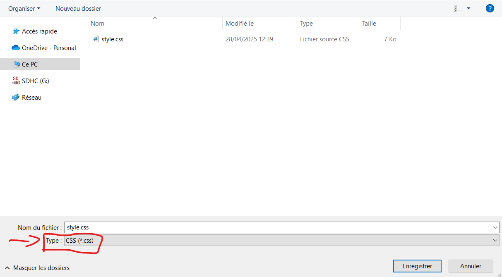

TP Séance 3 : Création de votre propre page web
Dans cette séance et les prochaines, vous allez créer et mettre en page, grace au CSS, votre propre site web sur le thème de votre choix.
Ce travail fera l'object d'une note sur 20
L’esthétique des pages et l'orthographe seront prises en compte.
Il faut, en plus, que toutes les contraintes (pas encore données) soient respectées, que les pages s’affichent correctement et que les liens fonctionnent.
Conseils :
-
Vous pouvez vous aider du site suivant :
w3schools
Ce dernier recense les différentes balises HTML (et CSS) existante, leur utilité et vous donne la possiblité de voir et de tester à quoi cela ressemble.
- Vous avez le document de cours de CSS imprimé
- Sinon google est votre ami !
N'oubliez pas d'enregistrer votre fichier avec l'extension
.html et de le tester dans un navigateur.
Pour ceux qui ne savent pas par où commencer voici des instruction détaillés :
- Ouvrir l'application VS code
-
Ouvrir votre fichier HTML de la dernière séance (en haut à gauche :
file > open file > double clic sur votre fichier HTML qui se trouve
dans votre dossier créé spécialement pour cela lors de la dernière
séance)

- Pour ceux dont le fichier n'a pas été enregistré sous l'extension HTML la dernière fois (Vous pouvez trouver cette information dans votre barème de notation de la dernière séance, ou juste observer si le nom du fichier termine par .html) faîtes en haut a gauche file > save as > et réenregistez votre fichier avec l'extension .htlm par dessus l'ancien fichier (donc avec le même nom)
- Maintenant créez un nouveau fichier (en haut à gauche : file > New Text File)
-
Enregistrez ce nouveau fichier en le nommant "style" et en faisant
bien attention à choisir l'extension .css. Pensez egalement à
l'enregistrer dans votre dossier relatif a ce TP.

Ce fichier sera le fichier CSS qui va permettre de mettre de la mise en page dans votre page web (couleur, background, police, etc...) -
Placez cette ligne de code :
<link rel="stylesheet" href="style.css" />dans le <head> du HTML
Elle qui indique que ce fichier HTML est associé à un fichier appelé style.css et chargé de la mise en forme. - Modifier le fichier html pour créez votre page web, et construire en parallèle le fichier css pour la mise en page, à l'aide des documents concernant le language css fournis
-
Vous avec ici un exemple
pour vous inspirer. Si vous faites clique droit sur la page, puis
"code source de la page" vous avez accès au code HTML qui m'a permis
de faire cette page. Cela est valable pour tout les site sur
internet, vous pourrez vous amuser à tester chez vous.
Ici vous avez le même site mais sans CSS, pour vous monter la différence.
Voici quelques idées de sites web que vous pouvez créer pour vous inspirer dans votre projet, il n'y a aucune obligation, ce ne sont que des exemple pour vous inspirer:
- Mon film préféré : Créez une page sur votre film préféré, avec une description, des critiques et des images. Exemple : un site sur Avengers ou Harry Potter.
- Ma série TV préférée : Parlez de votre série préférée, avec des résumés des épisodes, des personnages et pourquoi vous aimez cette série. Exemple : un site sur Stranger Things ou Friends.
- Ma musique préférée : Faites un site sur un groupe, un artiste ou un genre musical que vous aimez. Vous pouvez ajouter des clips vidéo, des paroles de chansons, ou des photos. Exemple : un site sur Ed Sheeran ou Daft Punk.
- Un hobby ou une passion : Parlez d'un de vos hobbies comme le sport, les jeux vidéo, la photographie, etc. Expliquez ce que vous aimez et partagez des astuces ou des conseils. Exemple : un site sur le football ou les jeux de société.
- Un site de présentation personnelle : Créez un site où vous vous présentez. Vous pouvez parler de vos loisirs, de vos études, et de ce que vous aimez faire. Exemple : un site pour vous faire connaître par vos amis ou votre famille.